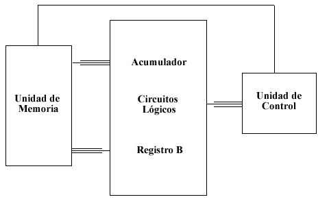

En computación, la unidad aritmética lógica o unidad aritmético-lógica, también conocida como ALU es un circuito digital que calcula operaciones aritméticas (como suma, resta, multiplicación, etc.) y operaciones lógicas (si, y, o, no), entre valores (generalmente uno o dos) de los argumentos.
Por mucho, los circuitos electrónicos más complejos son los que están construidos dentro de los chips de microprocesadores modernos. Por lo tanto, estos procesadores tienen dentro de ellos un ALU muy complejo y potente. De hecho, un microprocesador moderno (y los mainframes) puede tener múltiples núcleos, cada núcleo con múltiples unidades de ejecución, cada una de ellas con múltiples ALU.
Todas las operaciones se llevan a cabo en la unidad aritmética lógica de una computadora. La figura nos muestra un diagrama de bloques que muestra los elementos principales que se incluyen en una ALU común. La finalidad primordial de la ALU consiste en aceptar datos binarios que están almacenados en la memoria y ejecutar operaciones aritméticas con estos datos, de acuerdo con instrucciones que provienen de la unidad de control.
La unidad aritmética lógica contiene cuando menos dos registros de flip-flops: el registro B y el registro acumulador. También contiene lógica combinatoria, que efectúa las operaciones aritméticas sobre los números binarios que están almacenados en el registro B y el acumulador. Una secuencia común de operaciones puede ocurrir de la manera siguiente:
1. La unidad de control recibe una instrucción (de la unidad de memoria) especificando que un número almacenado en cierta localidad de la memoria (dirección) se sumará al número que está almacenado en ese momento en el registro acumulador.
2. El número que se sumará se transfiere de la memoria al registro B.
3. El número contenido en el registro B y el número en el registro acumulador se suman en los circuitos lógicos (por el comando emitido desde la unidad de control). La suma resultante se envía entonces al acumulador para ser almacenada.
4. El nuevo número en el acumulador puede permanecer para que se pueda sumar otro número a él, o, si el proceso aritmético particular llega a su fin, puede ser transferido a la memoria para ser almacenad
Para mas informacion da click en el video